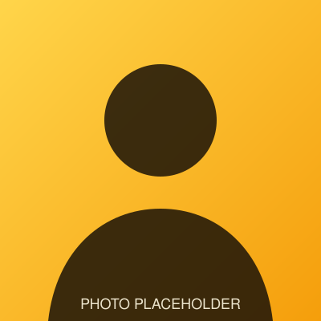

UK
Home
Schedule
Measurements
Papers
Focus
Materials
PPMS
Menu

Now
Grow new
materials
— measure what emerges.
·
Email
Save contact
What I make →
Focus · now
→
What I am working on
Schedule
→
next 2 months
PPMS · helium recondenser
→
—
K
cold tip
—
psi
dewar pressure
—
W
HRC heater
Reading the cryostat…
Measurements
→
—
Papers
→
—
Materials
→
—
on the periodic table